Ghana’s Finance Minister, Ken Ofori-Attah, presented the mid-year fiscal policy review of the Government of Ghana’s 2023 budget on Monday July 31, 2023, as required by law. Mid-year fiscal policy reviews provide an opportunity for the central government to update members of the legislature, and Ghanaians on the status of the execution of the budget it had previously presented. It is also an opportunity for government to present year-end key economic indicators for the previous fiscal year.
The Finance Minister, in his presentation, stated a few times that despite the challenges the country experienced, it has turned the corner. The minister suggested that the numbers are beginning to show that the nation has turned things around. There have been many reactions to this statement by the minister. As a citizen and not a spectator, I thought it would be a great exercise to query the public database and establish whether the country has indeed turned the corner as suggested. The public data sources we will be using are the Bank of Ghana’s repository of economic data, the Ghana Statistical Services’ quarterly gross domestic product (GDP) bulletin and the national budget as published by the Ministry of Finance.
Before we go any further, we need to first establish the corner. In other words, we need to understand what turning the corner means within the context of the Ghanaian economy. The minister is comparing key economic indicators at the time of the presentation to the levels in December 2022 (see screenshot below). But why December 2022? That was the month when headline inflation level was highest in decades. The Bank of Ghana’s key interest rate, the monetary policy rate, was highest in at least two decades.
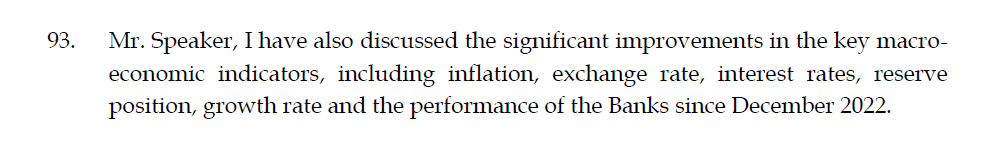
However, using December 2022 to establish turning the corner is not right, and that is why many disagree that we have indeed turned the corner. Truly turning the corner should mean that key economic indicators are starting to trend towards the levels they were before the COVID-19 pandemic hit us in March 2020. Remember, the government of Ghana continuously told us that the Ghanaian economy was strong and robust before the pandemic? Of course, you do. It was a key message for government.
Throughout this article, we will compare key economic indicators to the levels they were pre-pandemic and establish whether we have truly turned the corner. We will look at measures of economic growth, prices and interest rates, foreign exchange, international reserves and consumer/business confidence in the economy.
Economic growth
First, we discuss the rate of economic growth. Gross domestic product (GDP) is Ghana’s official measure of economic growth. GDP is the total market value of all finished goods and services produced within Ghana’s borders over a specified period (e.g., quarterly or annually). A way of establishing the rate of economic growth is comparing the real GDP (i.e., GDP adjusted to remove the effect of inflation) between periods. To determine whether we have turned the corner in terms of economic growth, we use Q4 of 2019 as the reference point. Ghana’s GDP is normally published at the quarterly level and 2019 Q4 is the quarter before the pandemic hit us in 2020 Q1.
As shown in the chart below, economic growth has recovered very well above pre-pandemic levels.
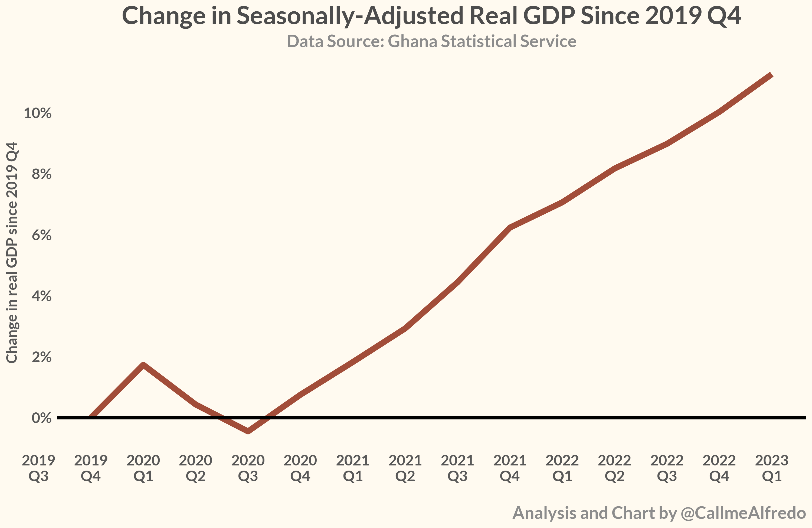
But this recovery in GDP growth is not uniform across all sectors. Whereas the agriculture and services sectors have recovered well above pre-pandemic levels, the industry sector continues to struggle to achieve the growth levels it had pre-pandemic.
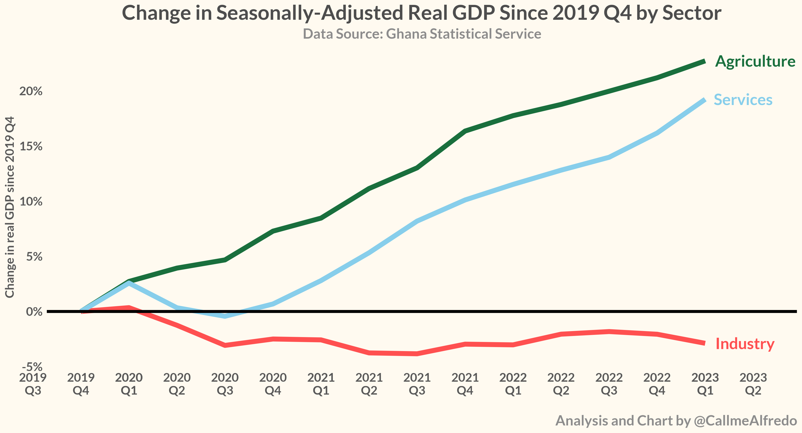
When we dig a bit deeper into the industrial sector, we observe that growth in the mining and quarrying sub-sector (which includes the oil and gas sector) has continuously been below the levels seen pre-pandemic and not showing any signs of recovery towards that level. Other sub-sectors such as water and waste management, electricity are growing above their pre-pandemic levels.
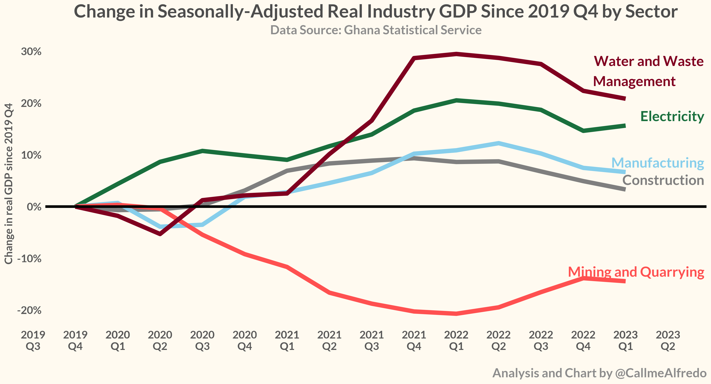
Another indicator that helps tracks economic activity is the Bank of Ghana’s composite index of economic activity (CIEA). The CIEA combines several indicators like retail sales, port activity, cement sales, imports, exports, tourist arrivals, credit to the private sector, industrial consumption of electricity and job adverts into one indicator and tracks how that changes over time. The continuous growth in real CIEA, after a slump in the initial stages of the pandemic, shows that it has recovered significantly well above its pre-pandemic level. That provides further evidence that the level of economic activity in the country has recovered to pre-pandemic levels.
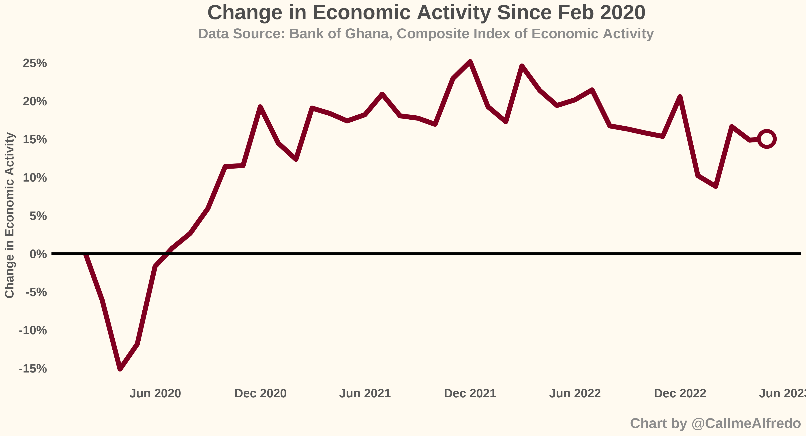
Looking at economic activity alone suggests that economy has recovered (or turned the corner). But we cannot just look at economic activity alone. Next, we look at prices and interest rates growth.
Inflation and interest rate growth
Inflation
Ghana, like almost every other jurisdiction, uses the consumer price index (CPI) to measure the rate of growth in the general price level. The CPI measures changes in the price of a fixed basket of goods and services purchased by households. A fixed basket of goods and services is used so that any changes in the value of the basket can be attributed to price changes. The Ghana Statistical Service releases the CPI each month.
We compare the consumer price index in February 2020 (i.e., the month before COVID-19 hit us) to subsequent months to establish whether Ghana has turned the corner.
As shown in the chart below, prices of all items have significantly grown well above the levels they were pre-pandemic. The prices of food items continue to grow well above pre-pandemic levels and not showing any signs of trending towards that level.
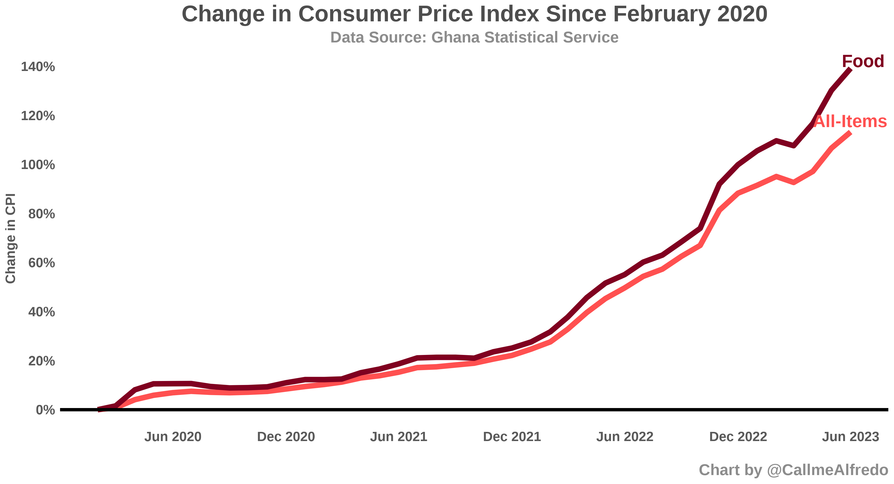
The government of Ghana has also referenced Russia’s invasion of Ukraine as a contributory factor to economic challenges and price growth. Even a comparison to pre-Russia-Ukraine price levels still shows about 90% growth in food prices as at June 2023.
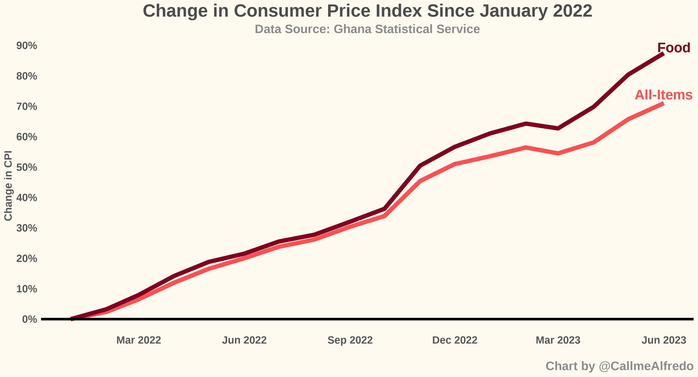
Interest rates
The Bank of Ghana implements monetary policy by influencing interest rates. It does so through the monetary policy rate (previously called the bank rate or the prime rate, depending on your age). It is often called the key interest rate because it serves as a reference cap for all other rates in the economy and it’s also simply the rate at which the Bank lends to commercial banks. The average monetary policy rate in 12-month period before COVID-19 was 16%. The rate has been trending upwards since then and currently at 30%.
Another interest rate worth looking at is the inter-bank weighted average rate, which is simply the rate at which commercial banks lend to each other. The average rate pre-pandemic was 15% and it’s currently at 26%.
Finally, and likely the most important interest rate to you as a reader is the commercial bank lending rate. That is the rate at which commercial banks lend money to you. Pre-pandemic commercial bank lending rate was at 24%. It is currently at 32%.
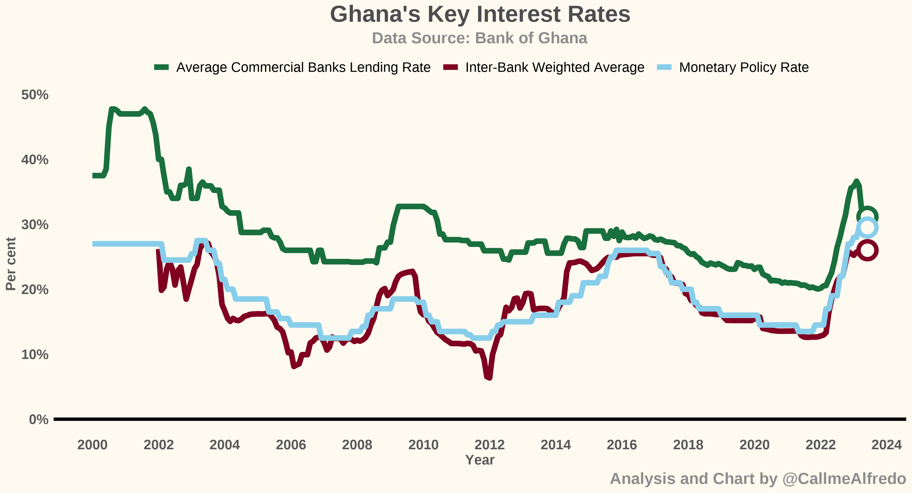
It is clear that based on prices and interest rates growth, we have not seen recovery towards pre-pandemic levels.
Foreign exchange and international reserves
Exchange rate
It is no news that the US dollars (USD) is important to Ghanaians. So, exchange rate movements are very important to Ghanaians. In the 12-month period before the pandemic, 1 USD was equivalent 5.3 Ghana cedis. After a period of relative stability, the USD rose significantly against the cedi. As of July 2023, the average inter-bank rate was 1 USD to 11 Ghana cedis. Even though the cedi has been relatively stable, the exchange rate is still significantly higher than the levels seen pre-pandemic as shown in the chart below.
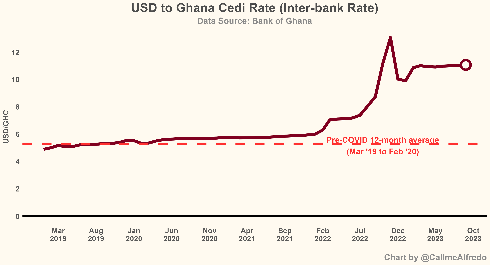
International reserves
International reserves are simply any kind of reserve funds that central banks can pass among each other. These reserves can be used to support international transactions among countries. As an import-driven economy, those reserves are very important to Ghana. International reserves can be presented in their absolute dollar values or the relative months of import they can over.
In the 12-month period before COVID-19, Ghana had gross international reserves that were equivalent to 4.3 months of import cover. Those reserves have depleted significantly and currently at 2.5 months of import cover.
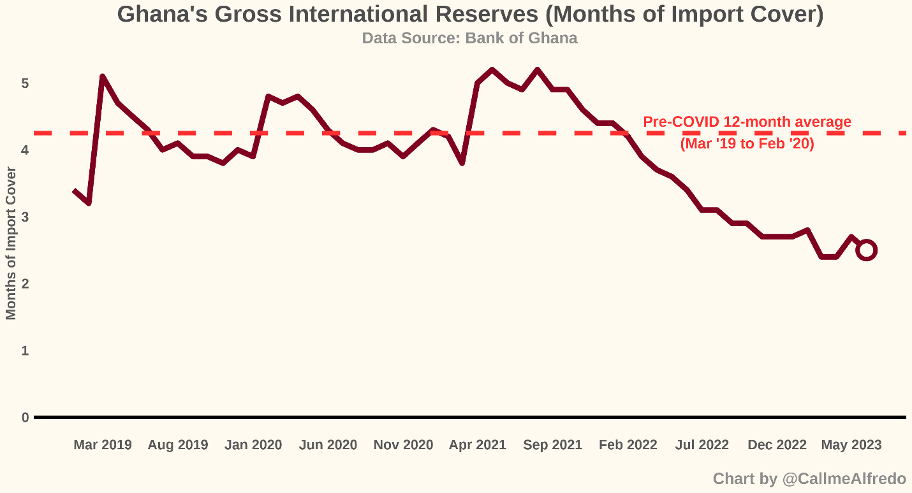
We see that exchange rate (aka dollar rate) is still significantly higher than it was pre-pandemic and international reserves have significantly depleted. On the basis of those indicators, we cannot say the country has turned the corner.
Consumer confidence
The Bank of Ghana tracks perception of consumers and businesses on the economy using confidence surveys. It then constructs a consumer confidence index and a business confidence index from the surveys.
Consumer confidence and optimism of future economic conditions has deteriorated significantly compared to pre-pandemic levels. Even though there has been some recovery in confidence, it is still well below the levels seen pre-pandemic. It is a similar story for the business community. Hence, we cannot conclude that we have turned the corner if consumers and businesses are less optimistic than they were pre-pandemic.
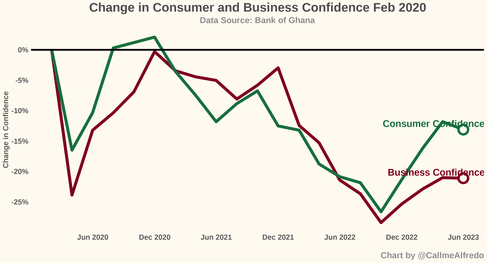
Government projections
One of the most surprising things to me and many others from the mid-year budget review was a revision to government’s key macroeconomic targets, despite expressing optimism that the country has turned the corner. As a reminder of these revisions, let us look at this nice infographic from Mr. Joe Jackson of Dalex Finance.
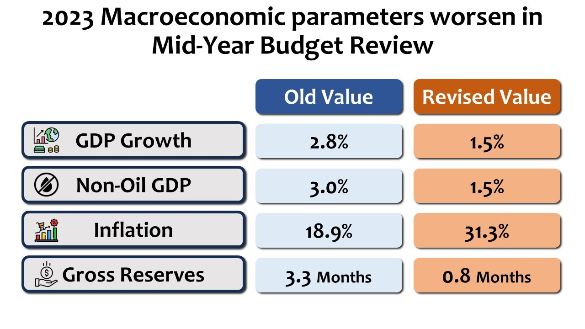
Since the finance minister insists that the country has turned the corner, why is government’s own projection of key indicators at the end of the year painting a grim picture?
End note
While we have seen a recovery to pre-pandemic levels in economic activity, several other measures like inflation, interest rates, exchange rate movements, gross international reserves, consumer and business confidence have not recovered to their pre-pandemic levels. I understand that the finance minister needs to paint a good picture to investors to restore some of the confidence lost in the economy, but we are not at that point yet. In fact, government’s own projections show that we are not at that point yet.
Huge thanks to financial analyst Jerome Kuseh (@readjerome on Twitter) for reviewing and providing feedback on this write-up.